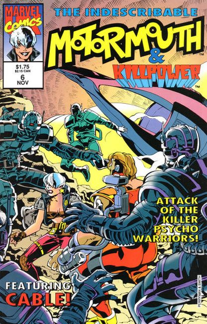

The series Motormouth (later Motormouth & Killpower issues #6-12), was part of a line of original comics released in the early-to-mid 1990s by Marvel UK.
Motormouth (Harley Davis) is orphaned at age 11 and grows up as part of a gang that lives in the East End of London. They survive by foraging and stealing. Her incredibly foul language earns her the nickname "Motormouth".
When she is seventeen, Harley is discovered by Laarson, an agent of Mys-Tech, the shadowy organisation that featured in all of Marvel UK's 1990s titles. Harley is a candidate for his MOPED (Mind Operated PErsonal Dematerialization) technology. This allows people to jump between alternative realities but will only operate on people with certain strands of DNA. The unit is disguised as a pair of training shoes, which Harley finds and tries on. At the same time Laarson is being executed by Mys-Tech's Techno-Wizards and agents were sent to find the MOPED units. In order to save her and the units, Laarson's subordinates activate the technology and send her to another universe.
While still on the run from Mys-Tech, Harley is sent to a future in which the world was covered in shopping malls. It was here she purchases a Soni-Muta 500 Unit, a microchip that allows her to mentally tune in to any radio station she wanted. This would later give her her sonic scream. Harley returns to her own universe and is captured and put to work by Mys-Tech. She escapes after a mission to Tokyo, Japan.

She has to make a random jump in order to escape and ends up on a planet named Tekron. Killpower, an agent of Mys-Tech, is sent to find her. Unable to escape him, Harley reasons with the man instead. Mentally little more than a small child, Killpower becomes intrigued by Harley and joins her as her partner. Harley is then badly injured on Tekron when a stray bullet hit her in the throat. Killpower uses her Soni-Muta 500 and the MOPED technology to cure her. This not only gave her the aforementioned sonic scream, she could now travel between universes without the aid of technology. Both are then forced to flee from Mys-Tech's influence.
Motormouth and Killpower appeared in the Battletide mini-series. Death's Head is hired by Mys-Tech to retrieve Killpower. While the two fought, Motormouth and Tuck (Death's Head partner) went on a shopping spree on an alien planet. Motormouth and Killpower later plan an attack on Tyburn, a powerful Mys-Tech agent. Harley is able to steal their MOPED unit and neutralize the tracking devices Mys-Tech had implanted in the duo. Tyburn survives the attack.
Motormouth becomes an essential part of the Mys-Tech Wars mini-series. At first, she is just one of many superheroes attacking the main Mys-Tech complex, hoping to take down the Techno-Wizards, the heads of Mys-Tech.
The wizards fight back successfully, slaughtering most of the heroes. Death-Head kills them in return. Unfortunately this endangers all of Earth. A fortunate fall from Killpower allows six heroes, Motormouth included, to break free of the melee and patch themselves into the required equipment so they can save the Earth from destruction. The others, such as Doctor Strange and Professor X, bring powerful forces to the mix. Motormouth ends up simply sitting in the sixth chair to fill out the required number of entities.
The Earth is saved and time is reversed, undoing all the deaths that have occurred. Only the last six remember any of which had happened.